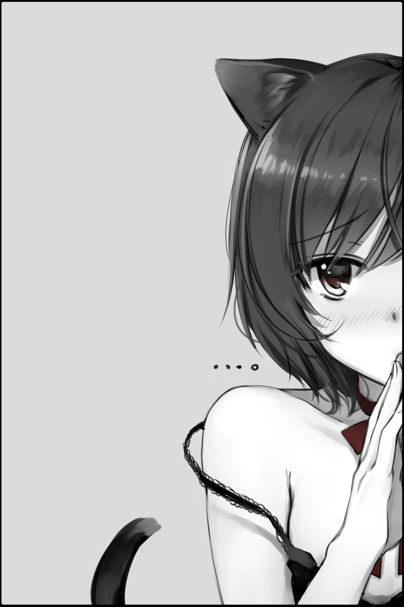

This page is to archive the images that I send my friends every day.
The reason is that I use Nyarch, a weeb themed arch distro, and it comes with a program called Catgirl Downloader.
It does as the name suggests it picks a random image of a Catgirl and lets me download it.
When I told my friend they said that I had to share one image each day.
Day 1

Day 2
Day 3